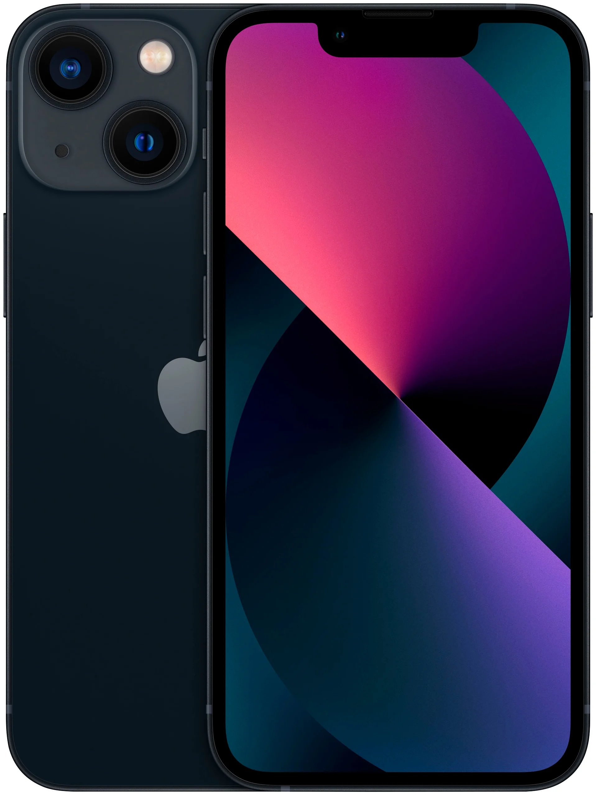

Смартфон Apple iPhone 13
128 ГБ, nano SIM+eSIM, тёмная ночь
Краткое описание товара
Наша самая совершенная система двух камер. Особый взгляд на прочность дисплея. Чип, с которым всё супербыстро.
Характеристика товара
- Экран - 6.1" (2532x1170) OLED 60 Гц
- Память - встроенная 128 ГБ, оперативная
- Фото - двойная камера, основная 12 МП
- Аккумулятор - 3240 мА·ч
- Процессор - Apple A15 Bionic
- SIM-карты - nano SIM+eSIM
- Операционная система - iOS 15
Подробное описание товара
Аккумулятор держится заметно дольше. iPhone 13 - сильный мира всего. Мы разработали совершенно новую схему расположения и развернули объективы на 45 градусов. Благодаря этому внутри корпуса поместилась наша лучшая система двух камер с увеличенной матрицей широкоугольной камеры. Кроме того, мы освободили место для системы оптической стабилизации изображения сдвигом матрицы. И повысили скорость работы матрицы на сверхширокоугольной камере. Новая сверхширокоугольная камера видит больше деталей в тёмных областях снимков. Новая широкоугольная камера улавливает на 47% больше света для более качественных фотографий и видео. Новая оптическая стабилизация со сдвигом матрицы обеспечит чёткие кадры даже в неустойчивом положении. Режим «Киноэффект» автоматически добавляет великолепные эффекты перемещения фокуса и изменения резкости. Просто начните запись видео. Режим «Киноэффект» будет удерживать фокус на объекте съёмки, создавая красивый эффект размытия вокруг него. Режим «Киноэффект» распознаёт, когда нужно перевести фокус на другого человека или объект, который появился в кадре. Теперь ваши видео будут смотреться как настоящее кино. Хотите переместить фокус или добавить эффект художественного размытия по окончании съёмки? Не проблема. С iPhone для этого достаточно нескольких касаний. На такое способны даже не все профессиональные кинокамеры. Дисплей OLED стал на 28% ярче — до 800 кд/м². На нём всё хорошо видно даже в самый солнечный день. А яркость при просмотре контента в HDR достигает 1200 кд/м². Вы сможете различить мельчайшие оттенки чёрного и белого — как и всех остальных цветов. При этом дисплей расходует заряд аккумулятора ещё более экономно, чем прежде.